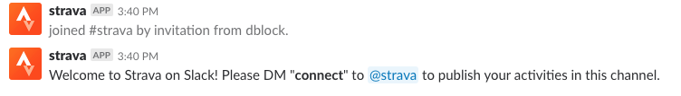
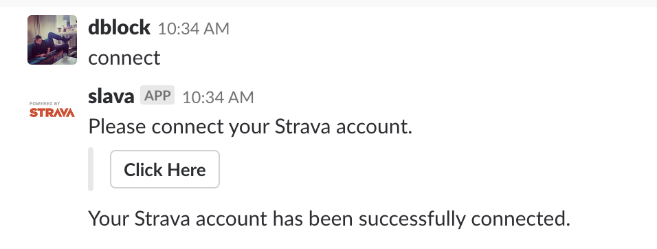
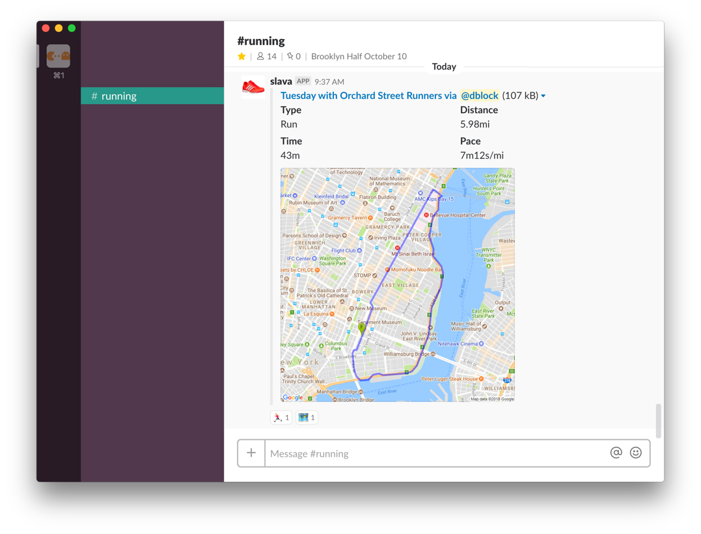

This bot is powered by Strava and posts your Strava activities to Slack. It is not made by, nor is officially affiliated with Strava.
Invite @strava to a channel.

DM "connect" to @strava to connect your account.

Notifications will be posted to any channel @strava is a member of.

DM help to @strava for more commands and options.
Want another feature? Fork me on Github, open an issue, tweet at @dblockdotorg, or e-mail dblock[at]dblock[dot]org.